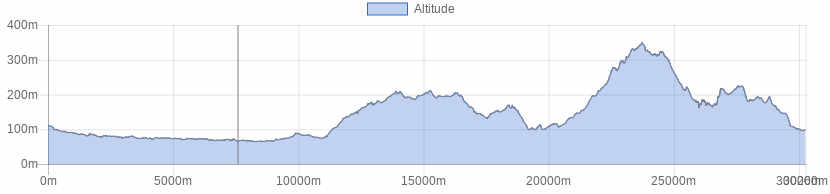

<!doctype html>
<html class="no-js" lang="en" dir="ltr">
  <head>
    <meta charset="utf-8">
    <meta http-equiv="x-ua-compatible" content="ie=edge">
    <meta name="viewport" content="width=device-width, initial-scale=1.0">
    <title>Foundation for Sites</title>
    <link rel="stylesheet" href="css/foundation.css">
    <link rel="stylesheet" href="css/app.css">
  </head>
  <style type="text/css">
  
  
h1.blu {
background-color: #2f5a55;
color: white;
font-size: 1.75rem; 
}

h1.verde {
background-color: #008e80;
color: white;
font-size: 1rem; 
}


h1.bianco {
background-color: white;
color: #506487;
font-size: 1rem; 
}

button.radius, .button.radius {
    border-radius: 3px; font-size:12px;
    }
  button.round, .button.round {
    border-radius: 1000px; font-size:1.2em; background-color:#3fa537}

</style>
  <body>
    <div class="grid-container">
      <div class="grid-x grid-padding-x">
        <div class="large-12 cell">
          <h1 class="verde">&nbsp;</h1>
        </div>
      </div>
      
       <div class="grid-x grid-padding-x">
        <div class="large-12 cell">
        <table>
        <tr>
        <td></td>
        <td><b>Through the wineyards in Montecarlo riding through the Fiaba di Pinocchio road
</b></td>
        </tr>
        </table>
        
        </div>
      </div>
      
      <div class="grid-x grid-padding-x">
        <div class="large-12 cell">
          <h1 class="verde">&nbsp;</h1>
        </div>	
      </div>
      
      <!------ inizio tabella --->
       <div class="grid-x grid-padding-x">
        <div class="large-12 cell">
        <table>
        
        
         <tr>
        <td><b>Difficulty level</B></td>
        <td></td>
        </tr>
        
        <tr>
        <td><b>Lenght</B></td>
        <td>30 Km</td>
        </tr>
        
        <tr>
        <td><b>Gap</B></td>
        <td>6567 + / 567 -</td>
        </tr>

        <tr>
        <td><b>Season</B></td>
        <td>All year</td>
        </tr>

        <tr>
        <td><b>Ground</B></td>
        <td>Gravel road, trail, paved road</td>
        </tr>
        
        <tr>
        <td><b>Description</B></td>
        <td></td>
        </tr>
        
        
        <tr>
        <td><b>Info on track</B></td>
        <td>
        The tour starts from the spacious parking of the old flower market in Pescia, easy to reach also from the trainstation (5 minutes distance from the parking lot).
From the very beginning of the tour we can take the cycle lane along the Pescia left river bank heading to Padule di Fucecchio, which we leave crossing the bridge in the residential area of Chiesanuova.
From Chiesanuova, riding on a paved road with low trafic, we pass through S. Salvatore and we reach Marginone. From here we start to climb up the road to the town of Montecarlo.
We leave Montecarlo behind to follow up north towards S. Martino in Colle. From S. Martino in Colle we take the dirt road that climbs down to Quercia delle Streghe and then follows towards Lappato, which we reach riding through single track in the woods, olive groves and wineyards.
From the residential area of Lappato, we take the road to San Gennaro, located up on the hill between olive groves facing the Appennines. The itinerary, in this way, takes on some roads that are usually used to reach the villas and farms and it requires some effort to climb because of the road gradient.
Once we reach San Gennaro, we ride across the main paved road until we arrive to the last houses on the uphill. Let’s continue, leaving the village eastwards, taking a dirt road that leads back to the Valle towards the Collodi residential area.
From the village center it starts the “Via delle Fiabe”, this flagging path leads us back to the start.

        </td>
        </tr>

       
       <tr>
        <td><b>Lodging</B></td>
        <td><a href="http://www.bikeexperience.tuscany.it/montecatini-bike-hotels/">Link</a></td>
        </tr>
        
        
        <tr>
        <td><b>Eating</B></td>
        <td>
        Ristorante il Corno Rosso<br>
via Ilio Menicucci, 92<br>
Capannori<br>
Phone: <a href="tel:0583978021">0583 978021</a><br>
<a href="https://www.facebook.com/Ristorante-il-Corno-Rosso-1425158841104289/">Pagina Facebook</a> <br>

        
</td>
        </tr>
        
        <tr>
        <td><b>Starting point</B></td>
        <td>
        
      By car or public transport
</td>
        </tr>
        
        </table>
        
        </div>
      </div>
      <div class="responsive-embed" style="width:75%; margin-left:auto; margin-right:auto;">
                <iframe  src="./sentieri/monte_fiaba.html" frameborder="0" allowfullscreen></iframe>
        </div>
    
   <div class="grid-x grid-padding-x">
        <div class="large-12 cell"><center>
          </center>
        </div>
      </div>
  
  
  <div class="grid-x grid-padding-x">
        <div class="large-12 cell"><center>
        <a href="mtb.html" class="button   round">Back</a><center>
        </div>
      </div>
    </div>

    <script src="js/vendor/jquery.js"></script>
    <script src="js/vendor/what-input.js"></script>
    <script src="js/vendor/foundation.js"></script>
    <script src="js/app.js"></script>
  </body>
</html>
